Nicoletta Faraone
Associate Professor at Acadia University
Dr. Nicoletta Faraone is an associate professor in the Department of Chemistry at Acadia University in Wolfville, Nova Scotia, Canada.
The Faraone Lab is an internationally recognized research group that provides critical expertise in identifying biological molecules, particularly in insect-plant interactions. Faraone’s NSERC Discovery Grant-funded research program is unveiling the dynamics behind human/animal-tick interactions by linking the neurophysiological response elicited by odorants and chemical cues with the corresponding induced and observed behaviour in ticks. With a Tick Chemosensory System Station (recently awarded by the Canadian Foundation for Innovation (CFI) John R. Evans Leaders Fund Award), Dr. Faraone’s group assesses tick response (via Gas Chromatography – Electro Tarso Graphy interface) (GC-ETD) to selected semiochemicals that are characterized and quantified by the Gas Chromatography – Mass Spectrometry / Flame Ionization Detector (GC-MS/FID) system components. Dr. Faraone’s research focuses on providing critical information on olfactory sensitivity in ticks, the odorant repertoire to which they are sensitive, and the repellent activity of specific natural compounds. Her lab group also has extensive experience and the required equipment (e.g., spray dryer, ultra-homogenizer) to design and optimize carrier technologies (e.g., lures, nanoparticle emulsions, microencapsulation) for deploying semiochemical technologies. Beyond her research program, Dr. Faraone has extensive experience working with industry, researching solutions to their challenges and needs, and providing results in formats that enable the project partner to implement them in new products. Therefore, her lab is well positioned to lead this project, with the expertise and infrastructure to conduct chemical analyses, olfactory neurophysiological studies, behavioural assays, field research, and the development of natural-based tick-repellent products. Dr. Faraone will provide in-kind management time for the project and scientific leadership on all project elements within her lab group. Dr. Faraone’s Lab will donate the use of their GC-MS/FID, high-pressure liquid chromatography-ultraviolet/visible (HPLC-UV/Vis) and other small equipment for chemical analyses. This suite of equipment is essential for analyzing materials used during the electrophysiology and behavioural assays.
Education
Ph.D in Chemical Ecology | University of Palermo (Italy) | 2012
Msc in Chemical Science and Technology (summa cum laude) | University of Palermo (Italy) | 2008
B.Sc. Chemistry (Honors) | University of Basilicata (Italy) | 2006
Nicoletta’s Publications


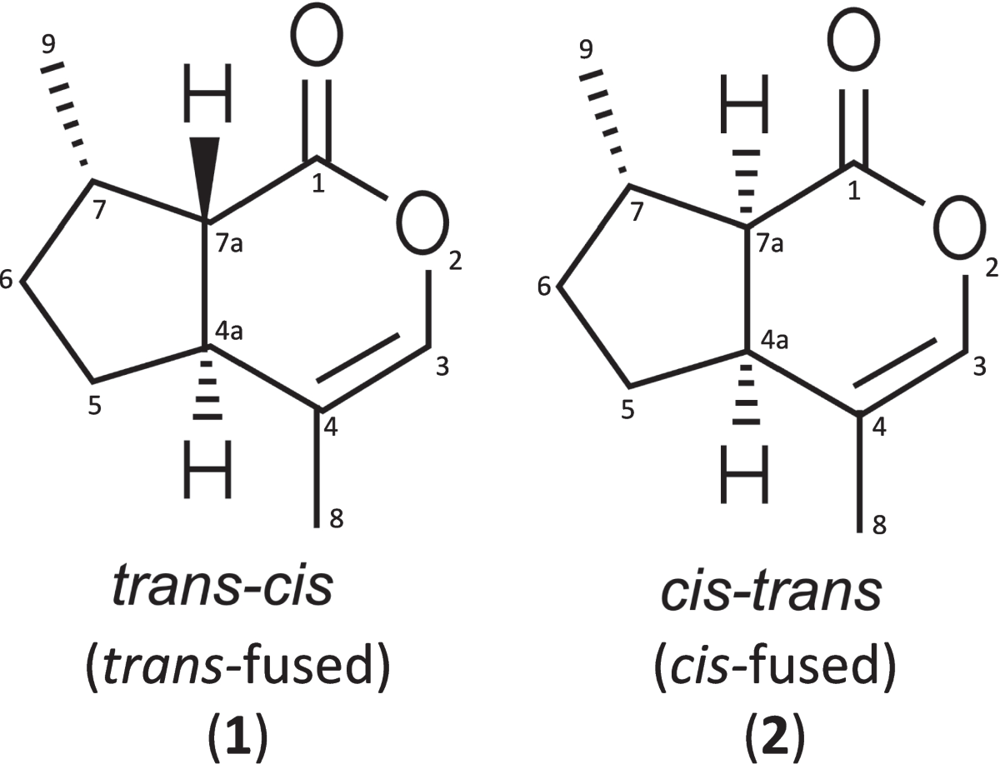


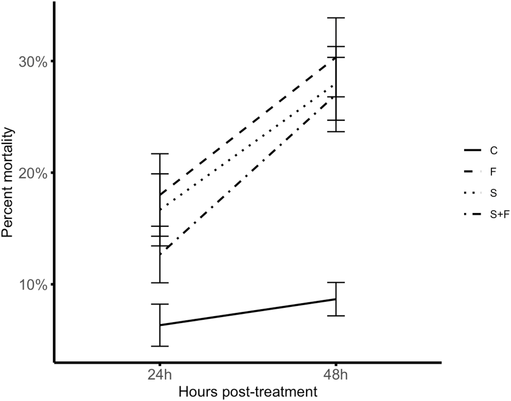
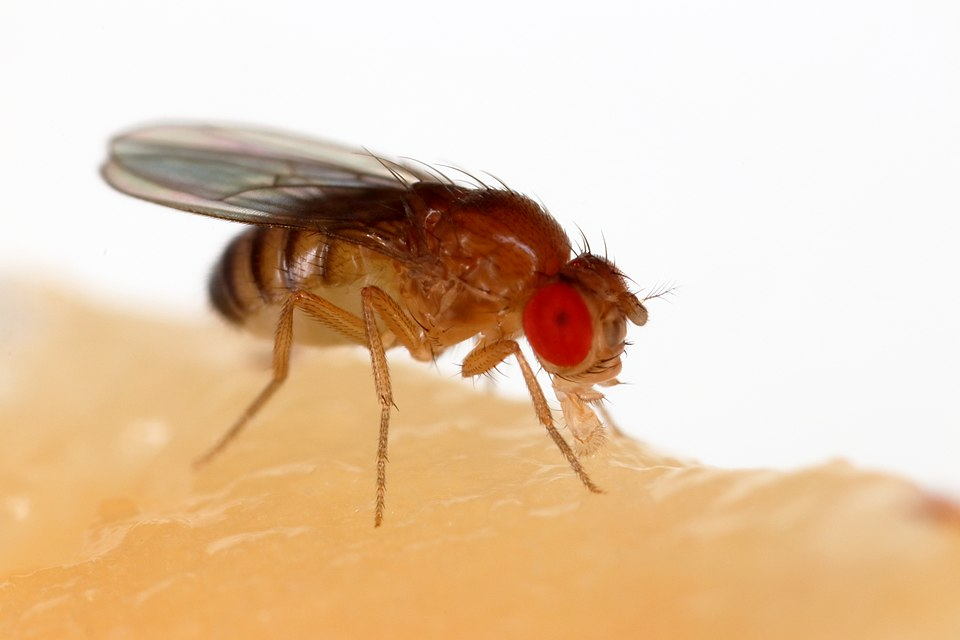


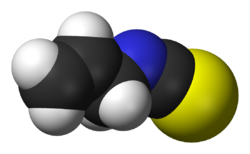


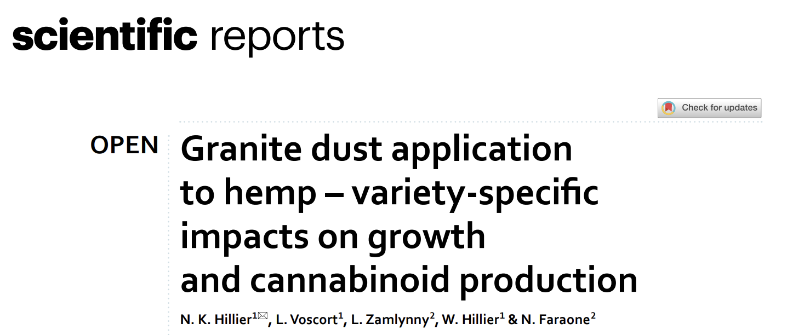
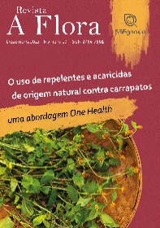


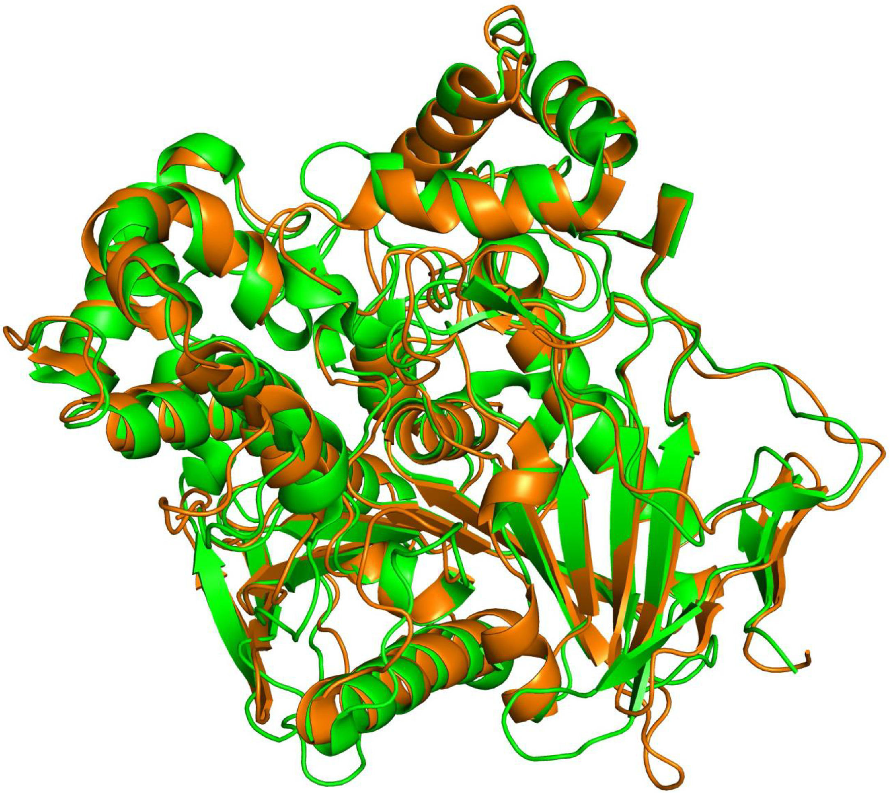


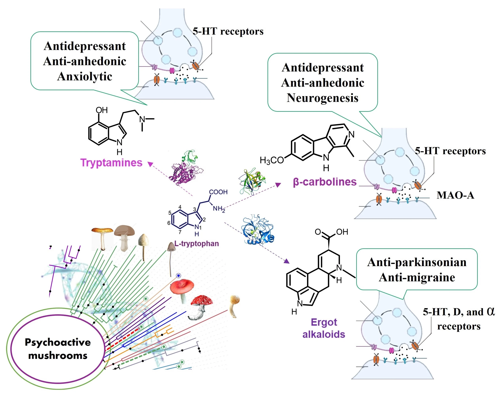
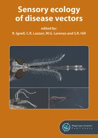

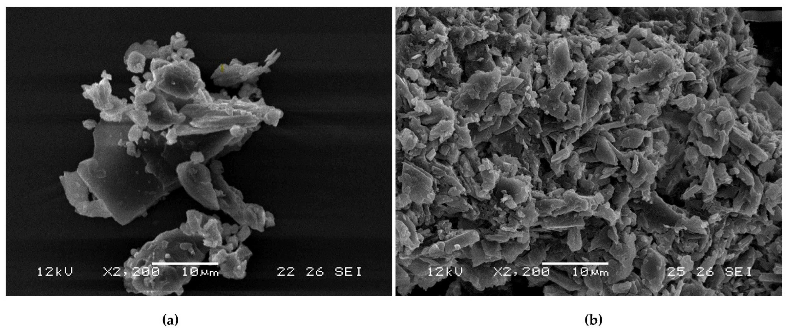
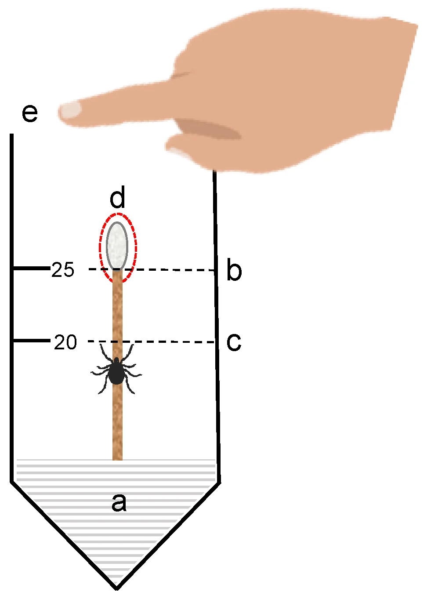
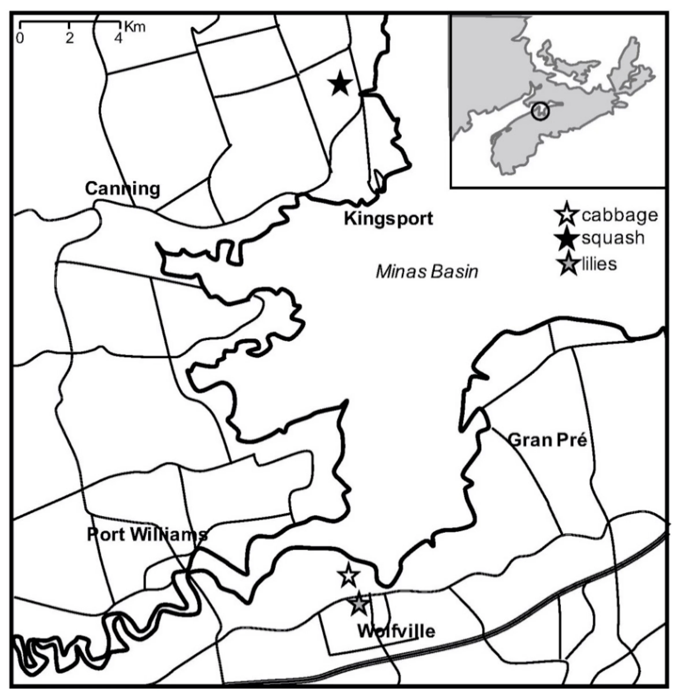

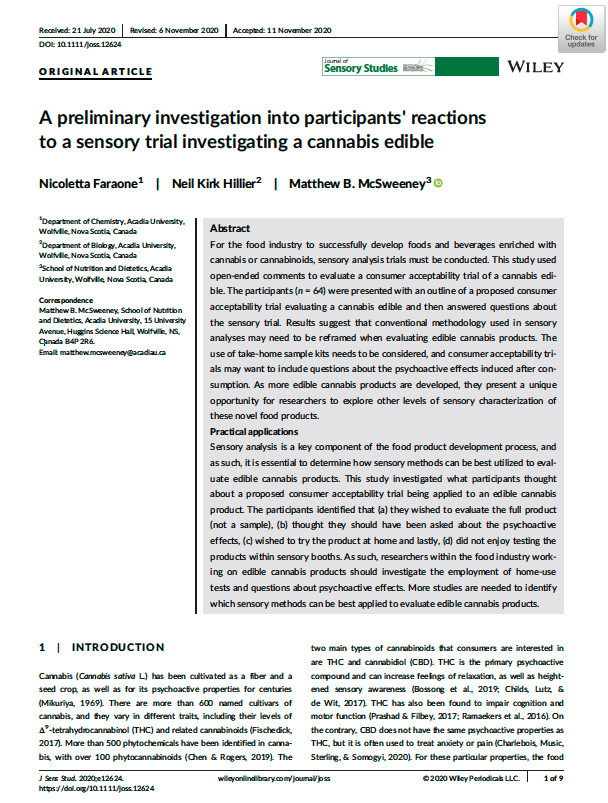


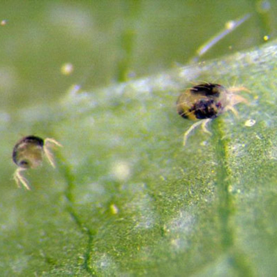

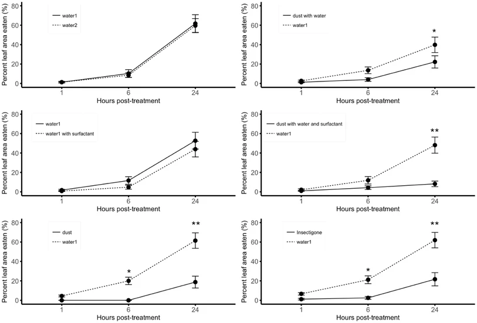
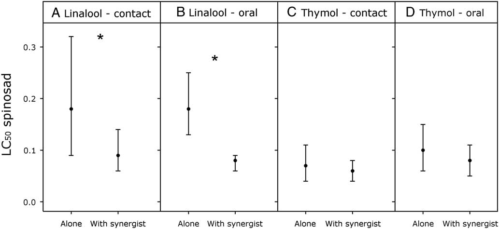


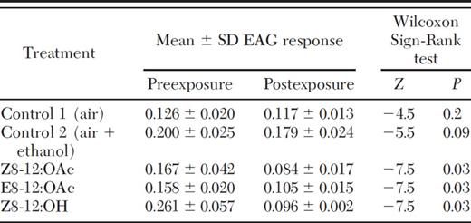
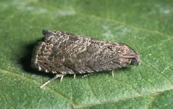